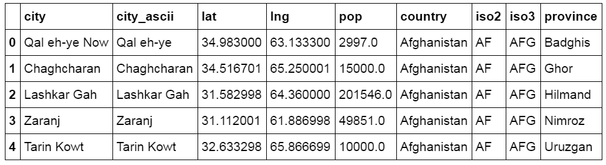
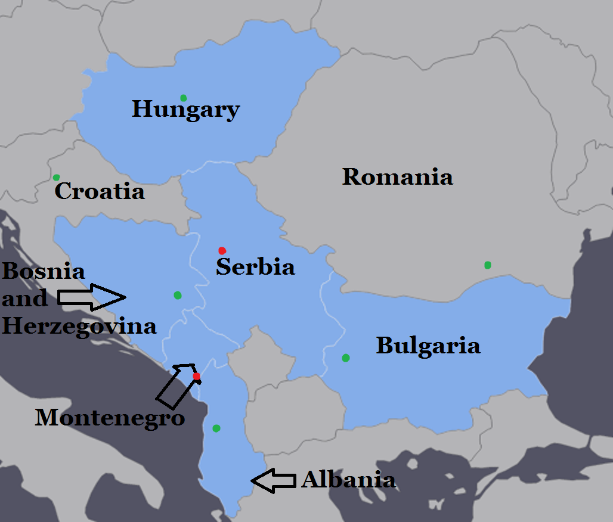

Filling in Missing Data Using K-Nearest Neighbors
As some of our countries were missing food consumption data, we used a k-nearest neighbors approach to fill in the missing data, which we will describe in this section. We can justify using a k-nearest neighbors approach as food growth, trade and consumption are inherently linked to geographic location, so we can likely obtain a good estimate for a countries' consumption data by examining that of its neighbors. An analytical study revealed that the average number of bordering countries for a country in the world is 2.7, so we used a 3-nearest-neighbors approach. First we determined which countries in our dataframe were missing data. Countries in our dataframe such as "Czechoslovakia," "Ethiopia PDR," "USSR," "Yugoslav SFR" referred to previously existing countries that have since been replaced by the Czech Republic and Slovakia, Ethiopia, the Russian Federation, and the former Yugoslav Republic of Macedonia respectively. We specifically chose to examine years starting in 1993 (after the last of those countries dissolved), so we chose to ignore them in our analysis.
After determining a list of "NaN countries" in our dataframe that we wished to analyze, we found nearest neighbors using closest geographic location by largest city. We obtained a list of the most populated cities in each country (along with their latitudes and longitudes) and created a dataframe using our data. The following figure shows part of our city dataframe.
For each country in our NaN countries list, we determined its largest city (by population) from our cities dataframe. We then found the largest city for every other country in our cities dataframe for which we had food consumption data, and found the three that were closest to our NaN country's city (calculated using Euclidean distance using latitude and longitude coordinates) and got their corresponding countries. Finally, given the three nearest neighbors for a given country, we filled in a missing country's data using a normalized mean with respect to population of the neighboring countries' consumption data. To calculate this, we took the sum of the neighboring countries' consumption data for a specific food group and divided it by the sum of the populations of the neighboring countries' largest cities. We then took the product of this value with the population size of the missing countries' largest city to obtain a more accurate estimate of food consumption for that country with respect to population.
To make sure our functions performed as expected, we tried running our functions on our 2000 food consumption dataframe, checking the nearest neighbors for each NaN country as well as making sure the NaN countries' values hae been filled in within our final dataframe. The following figure shows two examples of countries missing data (largest cities marked in red) and the nearest neighbors selected in those cases (highlighted), as well as some potential candidates that were considered (largest cities marked in green). The proximity of the chosen neighboring countries provided a good sanity check that our function was behaving correctly.
